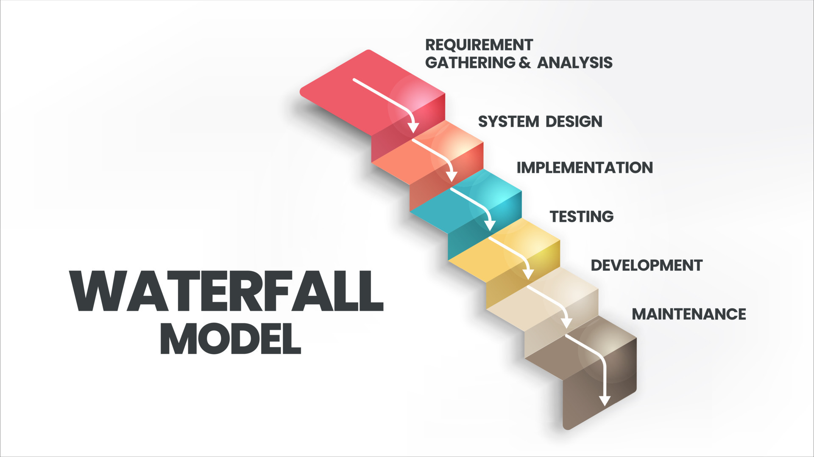
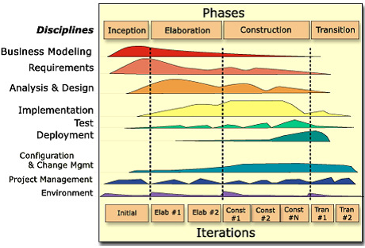
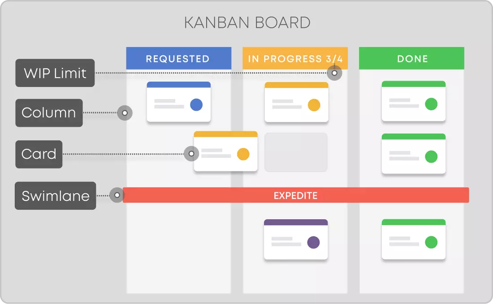
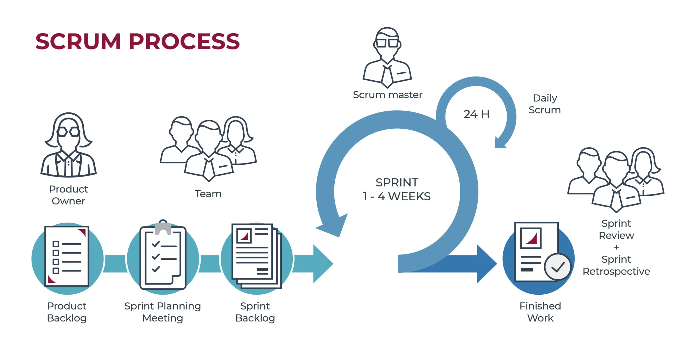
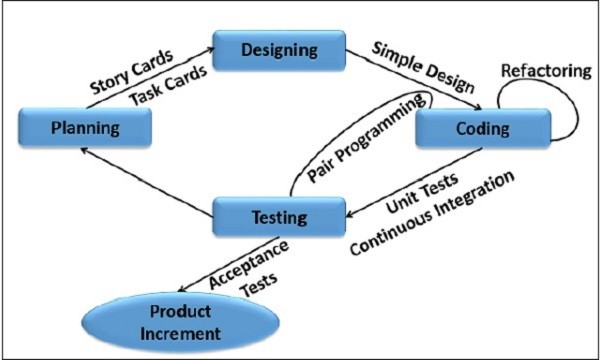

Extreme Programming na era dos agents.
Waterfall, RUP, Kanban, Scrum e XP — vantagens, desvantagens e quando cada um faz sentido.
Comunicação, Simplicidade, Feedback, Coragem, Respeito — mapeados para o mundo com agents.
As práticas do XP que viram hábitos diários — e como o pair programming foi reinventado.
O loop Story → ESC → Spec → Dev → Test → Review que se repete N vezes por dia.
Edit direto, Quick Spec/Dev ou BMAD completo — a decisão que define velocidade.
Os 4 critérios que todo entregável precisa passar — sem exceção.
Do sequencial ao ágil — entender de onde viemos é o primeiro passo para dominar onde estamos.





Os pilares do Extreme Programming — e o que cada um significa quando o seu par é um agent.
"O agent é tão bom quanto o contexto que você dá."
Das 12 práticas do XP, estas são as que se tornam hábito diário quando você trabalha com agents.
Você não escreve o código — você dirige. O agent é o co-pilot que você sempre revisa.
O loop que se repete N vezes por dia. O XP não mudou — a velocidade das iterações sim.
A decisão errada aqui desperdiça horas. Aprenda a escolher certo na primeira vez.
Regra prática: se você sabe exatamente o que mudar e onde, é edit direto. Se tem dúvida, é Quick Spec primeiro.
Done sem teste não é done. Os 4 critérios obrigatórios para qualquer entregável.
É o foundation que escala com agents. Os valores e práticas do XP são mais relevantes do que nunca — o que mudou é a velocidade.